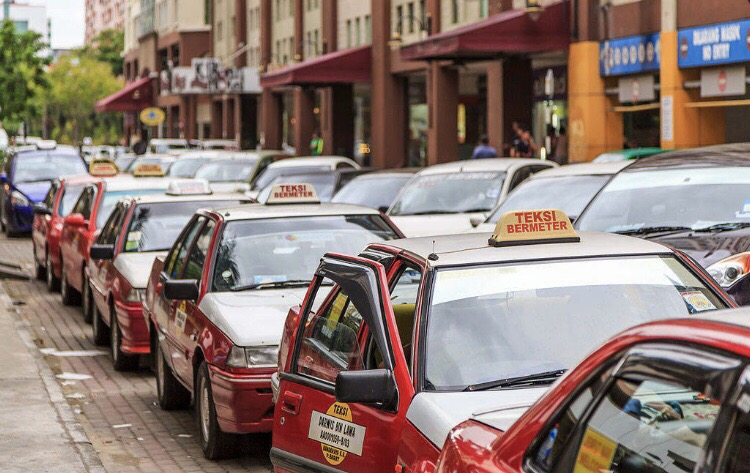
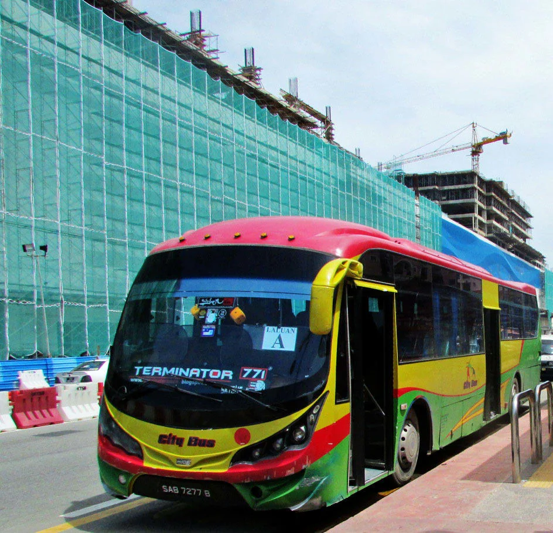

ღ일반택시
코타키나발루 여행 시 가장 보편적인 교통수단은 택시이다.
정찰제라 바가지요금을 걱정 안해도 되지만 물가에 비해 요금이 비싸다.

정찰제라 바가지요금을 걱정 안해도 되지만 물가에 비해 요금이 비싸다.
ღ그랩,우버 택시
일반 택시보다 편리하고 저렴한 택시 어플이다. 일반 택시의 1/3 정도의 저렴한 가격으로 안전하게 이용할 수 있다.
처음 제시된 금액에서 변동되는 게 없어 여행객들에게 인기이고 차량 상태도 좋은 편이다.
처음 제시된 금액에서 변동되는 게 없어 여행객들에게 인기이고 차량 상태도 좋은 편이다.
ღ시티버스
대중교통이 잘 발달하지 않았지만 버스 노선은 잘 되어 있는 편이다.
버스 정류장마다 번호, 노선이 잘 그려져 있으니 목적지를 확인하고 탑승하면 된다. 배차 간격은 10-30분 이다.

버스 정류장마다 번호, 노선이 잘 그려져 있으니 목적지를 확인하고 탑승하면 된다. 배차 간격은 10-30분 이다.